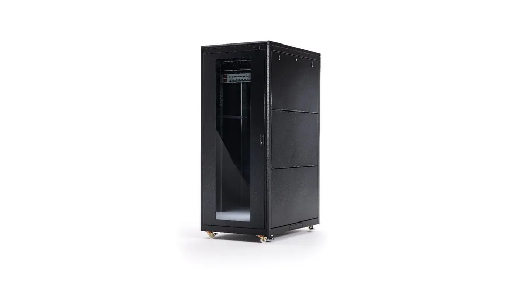

Veri Merkezlerinin Omurgası: Space Dynamics ile Türkiye’nin En Yüksek Standartlı Rack Kabinet Çözümleri
Dijital dönüşümün hız kesmeden devam ettiği günümüz dünyasında, verinin depolanması, işlenmesi ve korunması her ölçekteki işletme için kritik bir öneme sahiptir. Bu dijital altyapının fiziksel temelini ise şüphesiz rack kabinet sistemleri oluşturur. Türkiye’de bu temeli en sağlam şekilde atan, sektöre standart belirleyen bir firma öne çıkıyor: Space Dynamics.
Space Dynamics, evrensel standartlarda rack kabinet üretiminde uzmanlaşmış, Türkiye’nin lider firmalarından biri olarak, veri merkezi (data center), sistem odaları ve network altyapıları için en yüksek kalitede çözümler sunmaktadır.
Rack Kabinet Neden Kritik Bir Bileşendir?
Birçokları için basit bir metal kutu gibi görünse de, bir rack kabinet; milyonlarca dolarlık sunucuların, switch’lerin, UPS’lerin ve diğer kritik BT ekipmanlarının evi, koruyucusu ve verimlilik merkezidir.
Kalitesiz bir kabinet seçimi; yetersiz hava akışı nedeniyle ekipmanların aşırı ısınmasına, kablo karmaşası yüzünden bakım süreçlerinin kabusa dönüşmesine ve fiziksel güvenlik açıklarına yol açabilir. İşte tam bu noktada, Space Dynamics’in üretim felsefesi devreye giriyor.
Space Dynamics: Türkiye’de Kalitenin ve Standardın Adı
Space Dynamics, “Türkiye’de en yüksek standartta rack kabinet üretme” vizyonuyla hareket eder. Bu iddiayı, üretim süreçlerinin her aşamasına yansıtan firma, hem yerli üretimde öncü bir rol oynar hem de global rakipleriyle rahatlıkla rekabet edebilen ürünler ortaya koyar.
1. Evrensel Standartlarda Üretim (Universal Compatibility)
Space Dynamics’in başarısının anahtarlarından biri, “evrensel standartta” üretim yapmasıdır. 19 inç (19″) standardı başta olmak üzere, uluslararası normlara tam uyumlu kabinetler üretirler. Bu ne anlama gelir?
- Marka Bağımsız Uyumluluk: Hangi marka sunucu, network cihazı veya depolama ünitesi kullanırsanız kullanın (HP, Dell, Cisco, IBM vb.), Space Dynamics kabinetlerine sorunsuz bir şekilde monte edebilirsiniz.
- Geleceğe Yönelik Yatırım: Altyapınız büyüdükçe veya değiştikçe, kabinetleriniz yeni ekipmanlarla uyumlu kalmaya devam eder.
- Global Projelerde Güven: Uluslararası projelerde veya yabancı iş ortaklarıyla çalışırken, Space Dynamics kabinetleri global standartları karşıladığı için güvenle tercih edilir.
2. “En Yüksek Standart” Ne Anlama Geliyor?
Space Dynamics için “en yüksek standart” sadece bir slogan değil, ölçülebilir kalite parametrelerini ifade eder:
- Malzeme Kalitesi ve Dayanıklılık: Yüksek taşıma kapasitesine sahip, sağlam çelik konstrüksiyon ve dayanıklı boya teknolojisi sayesinde, en ağır sunucu ekipmanlarını bile güvenle taşır ve fiziksel darbelere karşı korur.
- Optimize Edilmiş Hava Akışı: Veri merkezlerindeki en büyük düşman ısıdır. Space Dynamics kabinetleri, perfore (delikli) ön ve arka kapak seçenekleri, akıllı fan modülleri ve pasif soğutma kanalları ile maksimum hava akışı sağlayarak ekipmanların ideal sıcaklıkta çalışmasını garanti eder.
- Üstün Kablo Yönetimi: Kablo karmaşası (spaghetti cabling), hem hava akışını engeller hem de bakımı zorlaştırır. Space Dynamics, entegre dikey ve yatay kablo yönetim kanalları ile temiz, düzenli ve erişilebilir bir altyapı sunar.
- Fiziksel Güvenlik: Kilitli yan paneller ve kapaklar, kritik verilere yetkisiz erişimi engelleyerek altyapınızın ilk savunma hattını oluşturur.
Yerli Üretimin Gücü: Neden Space Dynamics?
Sunucu kabineti veya network kabineti ihtiyacınızda yerli bir lider olan Space Dynamics’i tercih etmek, işletmelere çok yönlü avantajlar sağlar:
- Maliyet ve Tedarik Avantajı: Yerli üretim sayesinde ithal ürünlerdeki yüksek maliyetlerden ve uzun tedarik sürelerinden kurtulursunuz.
- Esnek Çözümler: Standart ürünlerin yanı sıra, projenize özel (custom-made) ihtiyaçlar için hızlı ve esnek çözümler üretebilme kabiliyetine sahiptirler.
- Satış Sonrası Destek: Karşınızda yerli bir muhatap bulmanın verdiği güvenle, teknik destek ve yedek parça temini gibi konularda anında hizmet alırsınız.
Geleceğin Altyapısını Bugün Kurun
İster küçük bir sistem odası kuruyor olun, ister devasa bir data center projesi yönetiyor olun; altyapınızın temeli olan rack kabinet seçiminiz, tüm operasyonunuzun verimliliğini ve güvenliğini doğrudan etkileyecektir.
Space Dynamics, Türkiye’de ürettiği evrensel ve yüksek standartlardaki rack kabinet çözümleriyle, işletmenizin dijital kalbini koruma altına almayı ve en verimli şekilde çalışmasını sağlamayı taahhüt eder. Altyapınızda kaliteden ödün vermemek için Türkiye’nin lider üreticisinin uzmanlığına güvenin.